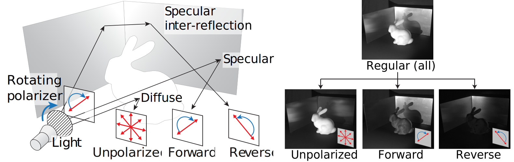
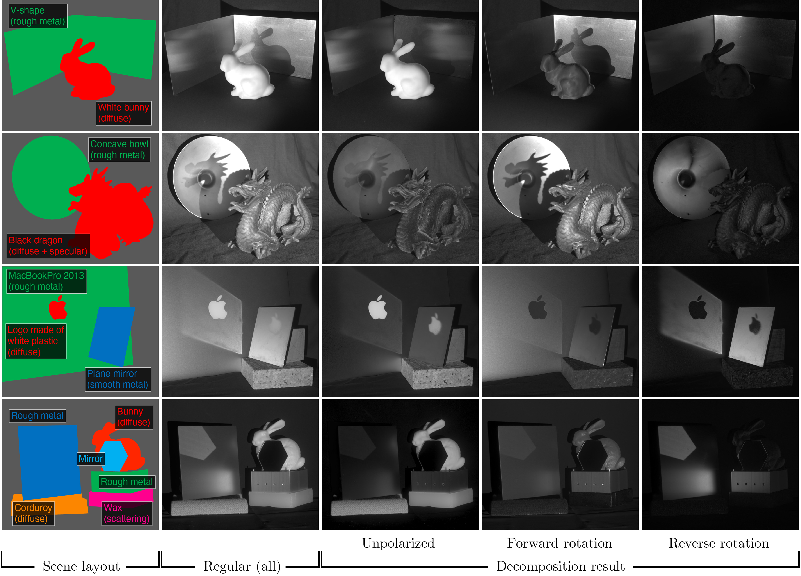
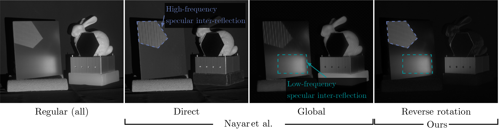
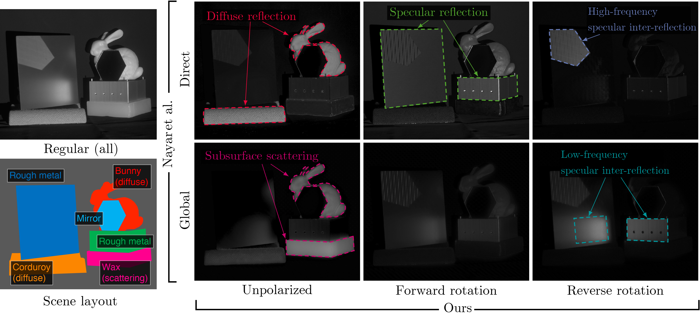
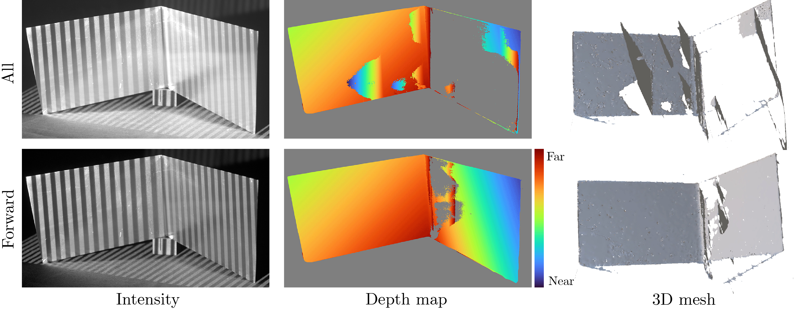

Polarimetric Light Transport Analysis
for Specular Inter-reflection
Ryota
Maeda and Shinsaku Hiura
University of Hyogo
IEEE Transactions on Computational Imaging
IEEE
Xplore
ArXiv
Code

In this paper, we propose a novel decomposition method for handling specular inter-reflection of metal
objects by using a unique polarimetric feature: the rotation direction of linear polarization. This rotation
direction serves as a discriminative factor between direct and inter-reflection on specular surfaces. To
decompose the reflectance components, we actively rotate the linear polarization of incident light and analyze
the rotation direction of the reflected light. We evaluate our method using both synthetic and real data,
demonstrating its effectiveness in decomposing specular inter-reflections of metal objects. Furthermore, we
demonstrate that our method can be combined with other decomposition methods for a detailed analysis of light
transport. As a practical application, we show its effectiveness in improving the accuracy of 3D measurement
against strong specular inter-reflection.
- We propose a polarization-based light transport decomposition method for specular interreflection with a
unique polarimetric feature: the rotation direction of linear polarization.
- We show the combination with existing methods in a complementary manner and achieve a more in-depth
analysis of light transport.
- We show a practical application of our method: 3D measurement with a projector-camera system for metal
objects. With our method, we can measure the s3D shape in the presence of specular inter-reflection.
Experimental Results
Decomposition of Specular Inter-reflection

Decomposition results for various scenes. Each column shows the images of the scene layout, regular (sum
of all components), unpolarized, forward rotation, and reverse rotation components. Our method can extract
specular inter-reflection of metal objects, as shown in the reverse rotation component for various scenes.
Coparison with Nayar's method

Comparison with Nayar's high-frequency illumination method for specular inter-reflection. This scene
contains two types of specular inter-reflection categorized as global components but have distinct spatial
frequency responses. Nayar's method failed to separate high-frequency inter-reflection from the hexagonal
mirror. In contrast, our method extracts both specular inter-reflection regardless of its frequency response.
Combining with Nayar's decomposition method.

Combining with Nayar's decomposition method. Row: Direct / Global components with Nayar's method. Column:
Unpolarized / Forward / Reverse components (ours). As the two methods differ in targeting optical phenomena, we
can combine them in a complementary manner and achieve a more in-depth decomposition. In particular, this
combination extracts only the high-frequency or low-frequency specular inter-reflections that have never been
achieved by previous methods.
Improving 3D measurement accuracy.

Application for 3D measurement under strong specular inter-reflection. We measure the V-groove metal
object using Gray code structured light. Left: An example of an intensity image projected under a Gray code
pattern. Middle: Reconstructed depth map. The gray color areas in the image indicate that they are either out of
range of depth or background. Right: Reconstructed 3D mesh from a different viewpoint. Without our method (all),
due to the specular inter-reflection, the proportion of correct points is only 54.6%. With our method, by using
the forward rotation components, the proportion of correct points increases to 92.8%.
Citation
If you find our work useful in your research, please consider citing:
@article{maeda2024polarimetric,
title={Polarimetric Light Transport Analysis for Specular Inter-reflection},
author={Maeda, Ryota and Hiura, Shinsaku},
journal={IEEE Transactions on Computational Imaging},
year={2024},
volume={10},
number={},
pages={876-887},
doi={10.1109/TCI.2024.3404612}
}